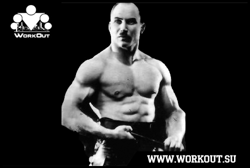

100 Дневный воркаут
<==== Вернуться к оглавлению
День 66. Сухожилия и связки
Вчера мы поговорили с вами о мышечных волокнах, но когда разговор заходит о силе, то она зависит далеко не только от одних мышц и их объёмов. В куда большей степени она зависит от силы ваших связок и сухожилий.
О чем речь?
Связки
— это эластичные соединения между костями, поддерживающие и укрепляющие сустав и не позволяющие ему двигаться в "неправильном" направлении.
В состав ткани связок и сухожилий входят коллагеновые и эластические волокна. Первые из них обеспечивают прочность связок, а вторые, как явствует из самого названия, - эластичность. Причем коллагеновых волокон в сухожилиях и связках больше, чем эластических.
Коллаген:
Белок, составляющий основу соединительной ткани организма (сухожилие, кость, хрящ, дерма и т. п.) и обеспечивающий её прочность и эластичность
Однако следует отметить, что содержание коллагена и эластина в связочной ткани у разных людей может заметно отличаться - в зависимости от особенностей конституции и возраста. Этим, в частности, обусловлена большая или меньшая «исходная» гибкость каждого человека.
Связки эластичны, и это дает им возможность растягиваться при движениях суставов. Эластичность можно развивать за счет специальных упражнений, что, в конечном итоге, сделает вас более гибкими.
Сухожилия
— это соединения между мышцей и костью. Главная задача сухожилий - передавать движения, выполняемые мышцами, костям. Это обязательное условие практически любого двигательного усилия человека.
Сухожилие состоит из компактных параллельных пучков коллагеновых волокон, между которыми расположены ряды фиброцитов (тендоцитов). Пучки коллагена удерживаются вместе протеогликанами.
Протеогликаны:
Образуют межуточное (основное) вещество соединительной ткани, в которое погружены или которым покрыты волокнистые элементы соединительной ткани. Протеогликаны играют роль и межтканевых прослоек и служат смазочным материалом в суставах.
Параллельно ходу коллагеновых волокон расположены кровеносные сосуды. Благодаря своей структуре сухожилия имеют высокую прочность и низкую растяжимость.
Форма сухожилий различна — от цилиндрической (чаще у длинных мышц) до плоской, пластинчатой (апоневрозы широких мышц).
Тренировка связок
На данный момент у нас нет достаточной информации о тренировках связок (вообще о существовании такого направления в тренировках и возможности отдельной тренировки именно связочного аппарата). Если у кого из участников программы есть такая информация, пожалуйста, поделитесь в комментариях!
Тренировка сухожилий
В начале 20 столетия атлет Александр Иванович Засс известный так же под псевдонимом Железный Самсон (Самсон) активно пропагандировал свою оригинальную систему статических упражнений с цепями, эпиграфом к которой были следующие слова: «Мускулы сами по себе не удержат тянущих в разные стороны лошадей, а сухожилия удержат, но их нужно тренировать, их нужно развивать, и способ их укрепления существует».
Он считал, что для развития атлетической силы, необходимой профессиональному силачу, поднимать пуды железа вовсе недостаточно. Нужно добавить и нечто другое. Если, например, попытаться согнуть толстый металлический прут или порвать цепь, то эти попытки при многократных повторениях окажутся очень эффективными для развития крепости сухожилий и силы мышц.

Подробнее о его подходе к тренировке сухожилий, а так же полный перечень предлагаемых им упражнений доступен по ссылке -
Изометрические упражнения Самсона
.
Заключение
Многие приступая к тренировкам в первую очередь думают именно о том, как им тренировать мышцы, и даже не задумываются о важности тренировок и других составляющих нашего организма. Но организм - это единая система, и для того, чтобы она функционировала на все 100%, она должна быть сбалансирована. Поэтому в обязательном порядке включайте в свои тренировки упражнения на развитие связок и сухожилий!
======> День 67. ССС - Сердечно-Сосудистая Система